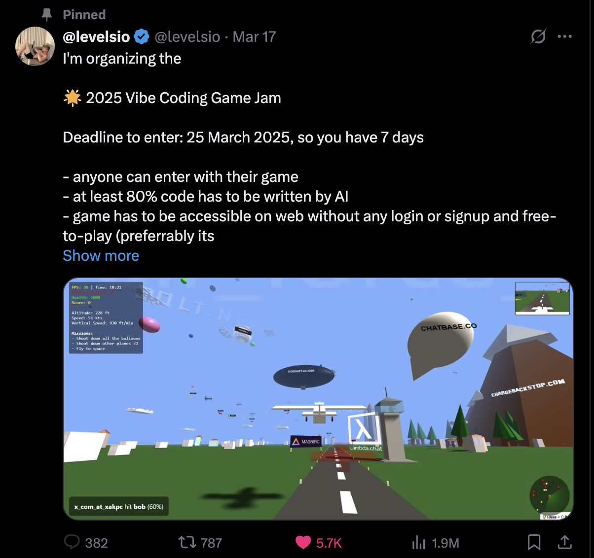

Vibe Coding a game with Claude: What's Good, What's Bad and some tips
Posted on 2025-03-25

Play the game here!
Over this weekend, levelsio hosted a "vibe coding" gaming hackathon (link).
The rules were simple:
- Atleast 80% of code to be written by AI. (For my game, Claude wrote more than 99% of it)
- Has to use ThreeJS (which I'd never heard of before)
A hackathon seemed like the perfect way to try out vibe coding, because no AI-written slop would enter a production codebase. I'd also seen some promising results from this repo, and I was curious to see how far I would get.
Anyway, so here was my plan:
- Make as many games as possible (hey I'm not the one coding anyway)
- Submit the most fun one.
Well, about ~10 hours of vibing later, here's my thoughts on vibe coding:
The Good
- First off, the speed at which you can get started is just awesome. I had a fully functional game (with minimal level design) that I could play on my phone within my first 30 minutes of vibe coding. It felt almost like magic.
- Similarly, I had a significantly more complex level 2 (with monsters, speed boosts, trapdoors and spikes) with the first 4 hours.
- Claude is impressively good at debugging and working in a loop with you to solve problems.
The Bad
- Figuring out which features are easy to build and which ones are hard is unintuitive. I noticed that some simple things would take a long time (such as adding audio), whereas other things that I would have considered hard happened super fast (such as complex particle graphics for a monster).
- Claude (understandably) needs help with placing things - it cant see the game, and therefore its positions for walls, spikes etc are way off. It can do simple things (like place 2 straight walls parallel to each other), but anything more than that needs to be done by a human. I suppose this could be solved by giving it screenshots of the game, but its not hard to go in and fix this stuff yourself.
The ugly
Here's a breakdown of how I spent my time over the hackathon:- First 30 minutes: Level 1
- Next 3 hours: Level 2 with significantly more features
- Next 6 hours: Refactoring levels 1 and 2 to try and add level 3. (unsuccessfully)
The real, major problem with vibe coding is that LLMs are pretty bad at writing production-ready code. For example, if there are 3 different ways to kill a player and restart the game, it will write 3 duplicate versions of restart logic in each of those 3 places - rather than creating a single reusable function to handle the restart. Additionally, the generated code often contains "magic numbers" scattered throughout, instead of defining parameters—such as player speed—as constants and consistently referencing those constants. This causes an explosion of bugs as you add features and your codebase expands in size. This is despite Claude knowing about every software design principle on the planet and recognizing that its not following them. Attempts to refactor code send the model into long loops of rewriting code, and breaks most game functionality in the process.
This was the single most frustrating part of the whole process, and prevented me from taking the game any further. However for what it's worth, I don't think this problem is unsolvable for LLMs, and I expect we'll see them get much better at this in future updates.
Tips for other vibe coders
If you're interested in giving vibe coding a try after all this, here's a list of some prompting strategies that helped me quite a bit:- Start small: I initially started by giving Claude a detailed description of the game in all its complexity - all the devices to support, a complicated layout maps, detailed gameplay etc. Claude tried to one-shot the whole thing and generated something absolutely unusable - I had to delete the codebase and start over. Starting small and adding features one at a time is a much more effective strategy
- Extensively test after each feature: As noted earlier, Claude's terrible at code re-use, abstraction and isolating responsibilities. A consequence of this is that changes to one part of the game (such as a new obstacle) may unintuitively break other parts of the game. Every single feature addition to the game should be followed by an extensive round of testing, or you'll have insidious bugs everywhere (this is also what slows down development so much later on)
- Ask Claude to add a lot of logging: Claude is surprisingly good at diagnosing and fixing issues if it has a clear log of what happened. Asking it to add logging and telling it which ones were printed can fix a lot of issues. Interestingly, the model's terrible at removing logging messages afterwards - I had to explicitly go remove them myself later on.
- Build debugging features: Add features to help you debug - after all, adding features is easy(ish) with AI! As an example, I added a magic key (M) which let me view the maze from a top view - allowing me to easily see what the layout looked like and what needed to be moved. Similarly, I had keys for skipping levels and for moving my character to various points (thereby saving me time while testing)
- Periodically tell Claude to reduce tech debt: Claude's pretty bad at refactoring and reusability, but nudging it to do so every few messages can help to some extent.
Lastly, I want to note that Windsurf has some handy tools for vibe coding - they allow you to revert the codebase to any point in your conversation with Claude (thereby undoing buggy stuff), and also automatically apply linting in order to correct syntax errors from Claude. Would definitely recommend using them if you're giving vibe coding a try, it can really help!
Overall Im both impressed by what's already possible with AI, and skeptical about the use of vibe coding on serious projects today. Excited to see what progress is unlocked by the next wave of models!